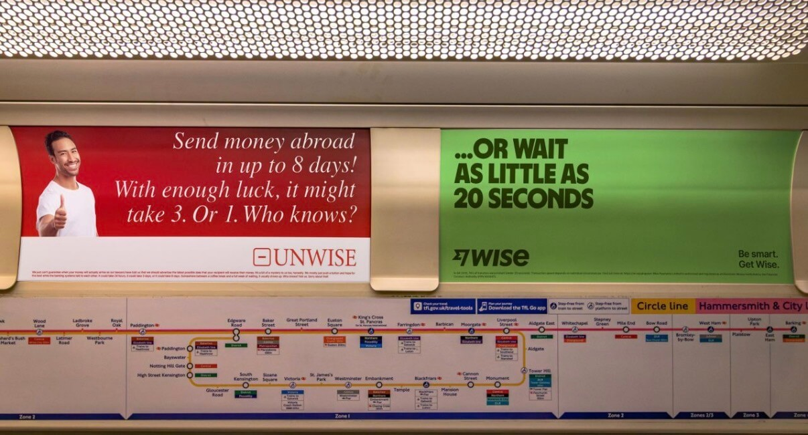
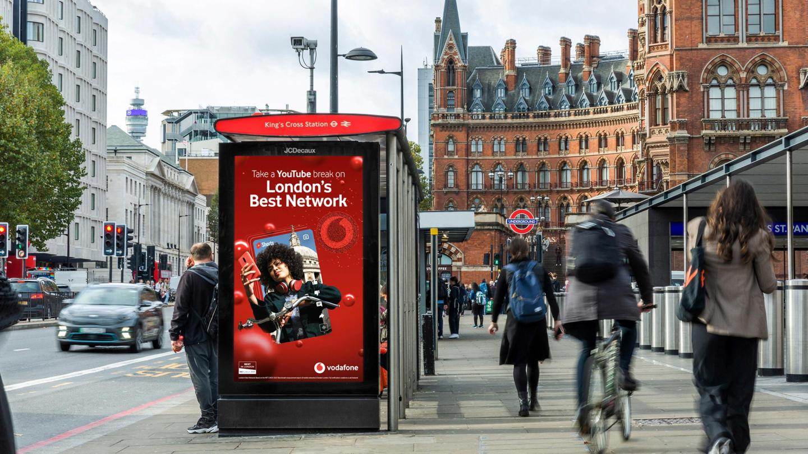
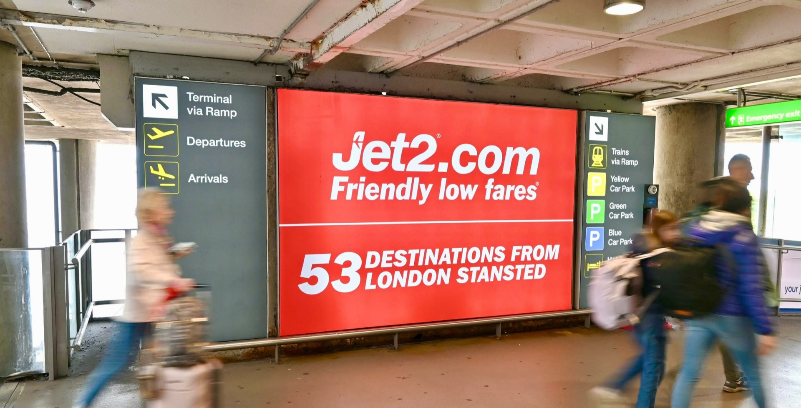

8 formats. Endless possibilities
Explore every major OOH format
From digital billboards to airport takeovers — every format is priced from our verified 2026 rate-card data and ready to drop into your plan.

Digital Billboards
High impact. Premium locations. Massive reach.
See costs & guide →
London Underground
Unmissable. 4M+ daily captive audience.
See costs & guide →
Taxis
Always on. Reaching your audience across the city.
See costs & guide →
Rail
National coverage. Big impact in key locations.
See costs & guide →
Buses
High frequency. Across the UK's busiest routes.
See costs & guide →
Bus Stops
Targeted. Local. Right where people wait.
See costs & guide →
Digital AdVans
Mobile. Flexible. Targeted to where your audience is.
See costs & guide →
Airports
Premium locations. Captive audience. High impact.
See costs & guide →